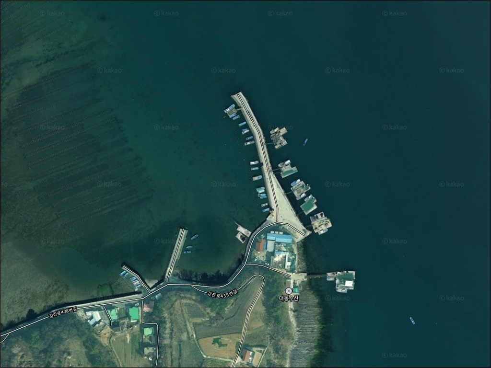
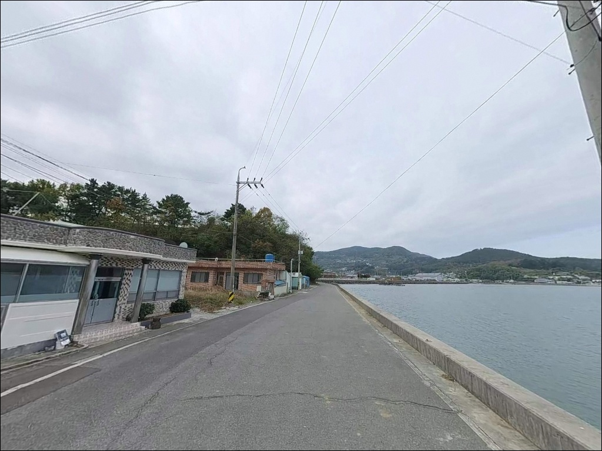
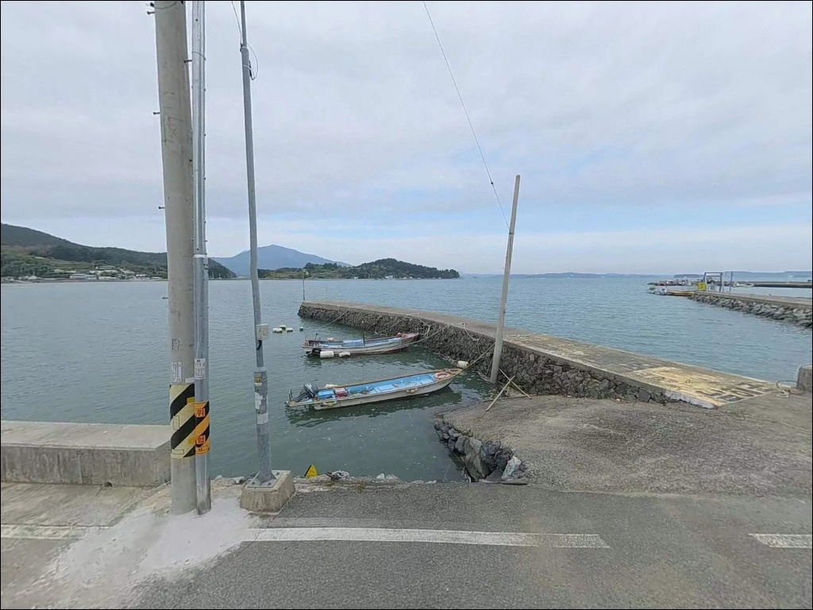
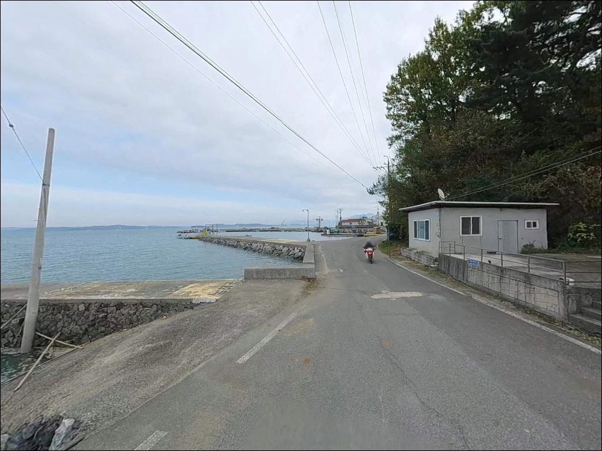
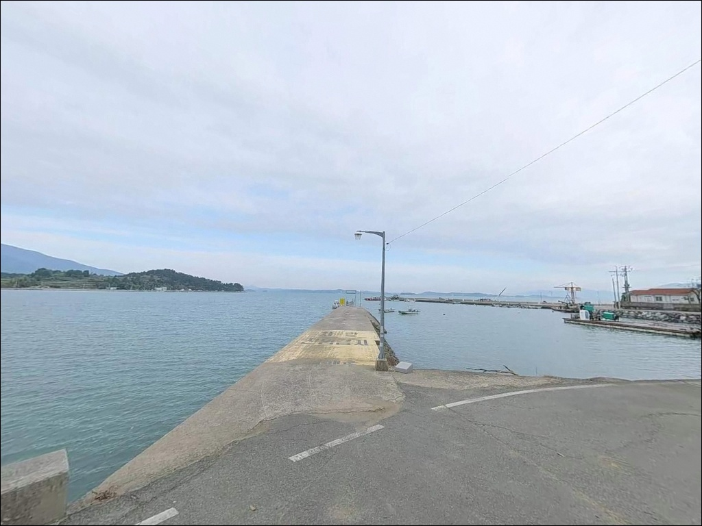
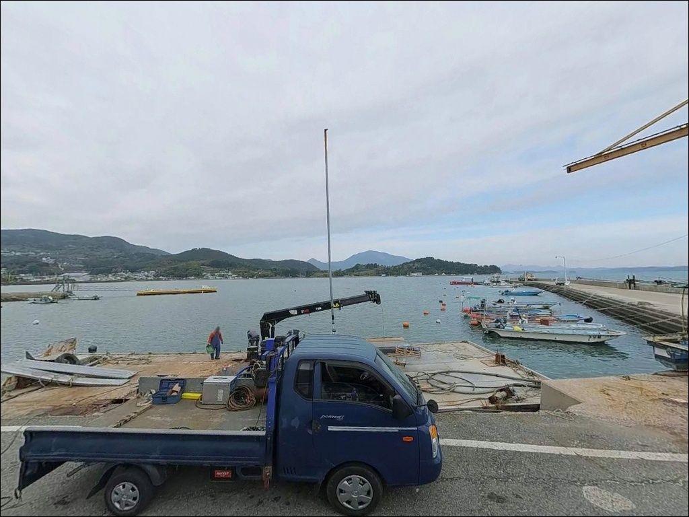
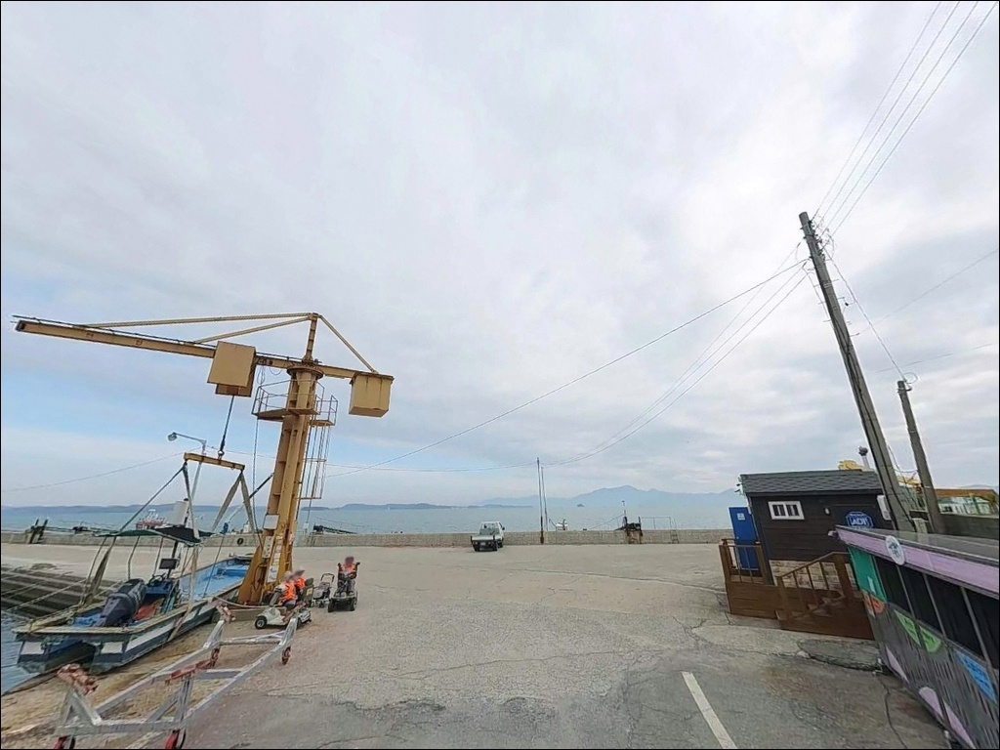
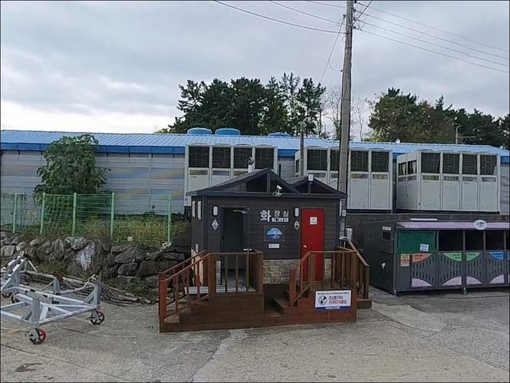
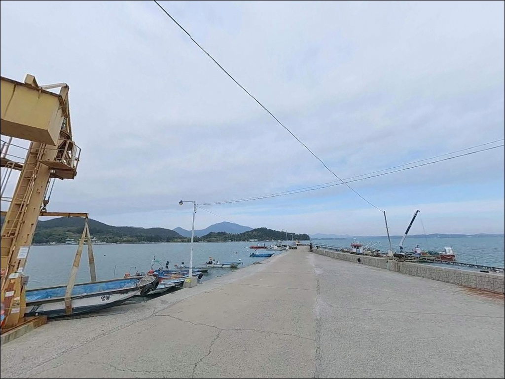

이 페이지에는 광고(제휴 링크 포함)가 있으며, 광고 링크를 통해 구매하면 운영자가 판매 수익 또는 수수료를 받을 수 있습니다. 포인트 사진: 카카오맵 스카이뷰·로드뷰. 이 페이지의 지도·사진 이미지는 카카오맵의 실제 서비스 이미지와 다를 수 있습니다.


조류 센 남해 봉우방파제 원투낚시, 30호 고부력 봉돌로 버틴 바닥층
포인트 안내
봉우방파제
경남 남해군 설천면 금음리 1-28
노량해협은 남해도와 경남 하동군 사이를 가르는
좁은 수로입니다.
이 수로 영향권 안에 있는 봉우방파제는
물때가 맞지 않으면 어떤 채비를 써도
조류에 밀려 바닥을 잡기 어려운 구조입니다.
초들물~중날물 타이밍을 먼저 계산하고 움직이는 것이
이 포인트를 제대로 공략하는 출발점입니다.
경남 남해군 설천면 금음리에 자리한 봉우방파제는
규모가 상당한 어촌 방파제로,
주변에 염섬과 이섬이 자리하고
방파제 끝단 외측에서 수심이 급격히 깊어지는
구조를 갖추고 있습니다.
현지인 위주로 이용되어 온 조용한 서브 포인트이지만,
노량해협 조류 흐름을 이해하면
꽤 깊이 있는 낚시가 가능한 자리입니다.
이 글은 봉우방파제의
진입 동선, 차박 여건, 물때 판단 기준,
낚시 스타일별 공략 조건에 집중합니다.
조황 단정이나 특정 어종 보장은
이 글의 범위에 포함되지 않습니다.

1. 진입 동선과 포인트 접근 조건
봉우방파제는 설천해안도로를 따라
봉우마을로 진입한 뒤 마을 안쪽 도로를 통해
방파제까지 연결되는 구조입니다.
진입로 전반은 아스팔트 포장이 완료된 상태이며,
완만한 경사 구간이 포함된
차량 1대 통행 가능 수준의 소로입니다.
대형 카라반이나 캠핑카는 진입 전에
위성지도로 마을 안쪽 도로 폭을 확인하는 편이 안전합니다.
방파제 초입에서 회차 공간이 확보되며,
방파제 본체는 폭이 좁아
방파제 진입 전 초입에 주차하는 것이
기본 운용 방식입니다.
주차 후보는 방파제 시작 지점의 시멘트 포장 부지와
마을 도로 가장자리 공간으로,
3~5대 수준의 비정형 주차가 가능합니다.
먼저 도착한 차량 수를 고려해
여유 공간을 미리 파악하는 것이
현장 운용의 첫 번째 판단입니다.

2. 차박 환경과 야간 체류 여건
봉우방파제 인근 금음리 일대는
소규모 어촌 마을 구조로,
민가 밀집도는 낮은 편입니다.
야간에는 차량 통행이 드물고
마을 생활 조명이 기본적으로 확보되는 환경이나,
방파제 본체 자체의 조명은 최소 수준이거나 없는 경우도 있습니다.
야간 낚시를 겸할 경우 개인 헤드랜턴은 필수입니다.
차박을 메인으로 삼기에는
주차 공간이 3~5대 수준으로 한정적이고,
방파제 외항 쪽은 노량해협 바람 영향을 직접 받아
기상 변화에 취약한 날에는 체류가 불편할 수 있습니다.
낚시 후 조용히 하룻밤 머무는 용도라면
공간 선점 여부를 현장에서 먼저 확인하는 것이 필요합니다.
이 포인트는 한려해상국립공원 노량지구에
해당하는 구역과 인접한 곳입니다.
국립공원 구역 내에서는 지정 외 야영·취사가
원칙적으로 허용되지 않으므로,
출발 전 한려해상국립공원사무소에 확인하는 것이
먼저입니다.


3. 주변 편의시설 및 인프라 현황
봉우방파제 바로 앞에는 편의점이나 식당이 없습니다.
금음리 마을 내에 새남해농협설천지점 하나로마트가 위치하여
기본 식품류와 생필품은 마을 안에서 해결이 가능합니다.
식수, 얼음, 낚시 소품은
출발 전에 충분히 준비하는 것이 현실적입니다.
반경 3km 안, 노량삼거리 방향으로 이동하면
남해대교 인근에 횟집과 소형 식당이 분포합니다.
편의점과 주유소는 설천면 중심부 방향으로
이동해야 이용이 가능합니다.
응급 상황 대비를 위한 비상약품과 연료는 출발 전 완비하는 편이
기본입니다.
반경 10km 내 남해읍에는
대형 마트, 약국, 의원급 의료기관이 분포하므로
부족한 장비나 식자재는 남해읍에서 보완할 수 있습니다.
차량으로 약 15분 거리입니다.

4. 낚시 성패를 가르는 진입 전 준비사항
봉우방파제에서 가장 먼저 확인할 것은 물때입니다.
노량해협 특성상 사리 전후에는 조류가 매우 세져
채비가 흐름을 버티지 못하는 상황이 생깁니다.
바다타임에서 설천면 기준 물때를 확인하고
초들물~중날물 구간에 맞춰 입장 시각을 설정하는 것이
이 포인트를 공략하는 기본 전략입니다.
노량해협은 조류 전환 시간대에 어류 활성도가 높아지는
협수로 패턴을 보입니다.
물때표와 함께 당일 해상 기상예보를 반드시 확인하고,
바람과 안개가 예보되는 날에는
진입 자체를 재검토하는 판단이 필요합니다.
방파제 끝단 외측은 수심 변화가 크고
조류가 강해 채비 손실이 잦은 편입니다.
원투낚시를 염두에 두고 있다면
고부력 봉돌과 여분 채비를 넉넉하게 준비하는 것이 좋습니다.
어선이 출입하는 선착장 구조이므로
어선 동선을 막지 않는 자리 선택이 기본 매너입니다.

5. 지형 기반 낚시 여건 분석
봉우방파제의 핵심은 노량해협과의 거리입니다.
남해도와 하동 사이를 가르는 이 협수로는
조류 방향이 바뀌는 물때 전환 구간마다
어류가 집중되는 흐름을 형성합니다.
방파제 외항 방향은 해협 본류에 직접 노출되며,
끝단에서 수심이 급격히 깊어지는 급심 지형입니다.
방파제 주변은 석축과 수중 여가 발달해 있어
어류의 은신처로 기능하는 구조입니다.
내항 쪽은 수심 0.6~2.8m 수준의 얕은 펄 저질이며,
간조 시에는 수심이 더 낮아집니다.
내항과 외항의 수심 차이가 뚜렷하므로
목표 어종과 낚시 방식에 따라 자리를 나눠 선택하는 것이
효율적입니다.
주변에 염섬과 이섬이 자리하고
인근 해역에 굴 양식이 분포하는 환경은
먹이 공급이 풍부한 내만형 특징을 더합니다.
다만 완전한 외해형 포인트가 아니기 때문에
강한 조류와 잔잔한 내만형 조건이
물때에 따라 교차하는 구조입니다.
출조 전에는 설천면 일대 최신 조황을
반드시 검색해 보시기 바랍니다.


6. 포인트에 어울리는 낚시 스타일
봉우방파제 지형에 가장 잘 맞는 방식은
원투낚시입니다.
방파제 끝단에서 수로 방향으로 멀리 채비를 보내면
급심 지형과 조류 흐름이 만나는 구간을
효과적으로 공략할 수 있습니다.
조류가 강한 날에는 30호 이상 고부력 봉돌 사용이 기본이며,
정조 타이밍을 전후로 집중하는 방식이
이 포인트에 적합합니다.
야간에는 볼락 라이트게임을 겸할 수 있습니다.
방파제 조명이 있는 구간에서는
집어 효과가 살아나는 편이며,
소형 지그헤드 채비로 석축 경계면과
끝단 수심 변화 구간을 탐색하는 방식이
이 지형 구조에 잘 맞는 접근입니다.
조류 흐름이 바뀌는 물때 전환 구간에는
루어낚시도 유효합니다.
방파제 끝단이나 꺾이는 지점에서
미노우나 바이브레이션 루어를 써서
농어 계열을 노리는 방식으로,
봄~가을 시즌에 이 해역의 어종 다양성이
높아지는 경향이 있습니다.
찌낚시는 내항 쪽 잔잔한 수면 조건에서
접근성이 좋은 방식입니다.

7. 대안 포인트와 플랜 B 동선
봉우방파제에서 자리가 여의치 않거나
조류 조건이 맞지 않을 때
가장 먼저 이동할 포인트는
남해충렬사 방파제입니다.
봉우방파제에서 약 2km 거리로,
같은 노량해협 해역에 속해 조류 패턴이 유사하며
바다타임에 등재된 공식 낚시 포인트로
현장 낚시인에게 조황 정보를 얻기도 좋은 자리입니다.
설천면 동일 행정구역 안에
감암방파제와 왕지방파제도 대안으로 활용할 수 있습니다.
감암방파제는 주차 여건이 조금 더 나은 편이며,
비슷한 수로형 낚시 환경을 갖추고 있습니다.
왕지방파제는 내만 방향으로 잔잔한 여건을
원하는 낚시인에게 맞는 대안입니다.
차박 여건이 불만족스러울 때는
노량리 해안도로변이 주차 공간이 상대적으로 넓고,
노량리 방면에 공중화장실이 위치하는 것으로
확인됩니다.
봉우방파제를 처음 찾는 경우라면
남해충렬사 방파제를 기점으로 삼고
봉우방파제를 병행 탐색하는 동선이
효율적입니다.

조용한 자리에서 노량 조류를
제대로 활용하고 싶은 낚시인에게
원투낚시나 루어낚시를 즐기는 낚시인이라면
봉우방파제의 지형 조건은
잘 맞는 구조입니다.
노량해협 조류가 방파제 끝단을 지나는 구간은
급심 지형과 맞물려
물때만 맞으면 다양한 어종을
기대해볼 수 있는 자리입니다.
반면 편의시설과 화장실이 방파제 주변에 없고
주차 공간도 한정적이므로,
대형 차량이나 완전한 캠핑 세팅을 원하는 경우에는
다소 불편한 자리가 될 수 있습니다.
물때 확인, 자급 준비, 진입로 사전 확인,
이 세 가지를 갖추고 간다면
현지인만 알던 조용한 포인트에서
여유로운 출조를 즐길 수 있습니다.
금음리 어촌 마을 앞에 자리를 깔고
노량수로 조류 흐름을 옆에 두며
하룻밤 머무는 차박 낚시 여행자라면,
국립공원 구역 행위 제한 여부만 먼저 확인해두면
낚시와 차박을 함께 즐기기 좋은
출조지가 될 수 있는 곳입니다.